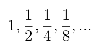

References
You can review recursion in the following places
Contents
Each question has a "Toggle Solution" button -- click it to reveal that question's solution.
Conceptual
Q1
What is a recursive function?
Answer: A recursive function is a function that calls itself one or more times. The call to itself is called a recursive call.
Q2
Explain what base cases and recursive cases are. How do they interact with each other?
Answer: A base case is an input that requires no recursive calls to compute; the output for that input is "immediately" known. A recursive case is an input that requires one or more recursive calls to compute an output. Since each recursive case makes a call to the function again, it eventually needs a stopping point: that stopping point is the base case.
Q3
What is a tree recursive function? How is it different from a linearly recursive function?
Answer: A tree recursive function is a function that makes two more recursive calls to itself (for example, the fibonacci function). This is different from linearly recursive functions (such as factorial), because linearly recursive functions make exactly one recursive call.
Q4
Describe what is wrong with the following function and find a way to fix it:
def factorial(n):
return n * factorial(n)Answer: There are two problems with factorial.
- First, the recursive call is made on the exact same input n. Since the input never gets smaller, the function will loop forever. To fix it, change the argument to the recursive call from n to n-1.
- There is no base case. There's no stopping point, so it will run forever. To fix it, add a base case for n == 0
def factorial(n):
if n == 0:
return 1
else:
return n * factorial(n - 1)Code Writing
Q1
A geometric series is a series whose first element is some number a; each element is equal to the previous element multiplied by some other number r. For example, the series
is a geometric series with the first element a = 1 and ratio r = 1/2.
Implement a function geo_sum that takes three numbers a and r (as defined above) and n, and calculates the sum of the first n elements of the geometric series defined by a and r. Use recursion!
def geo_sum(a, r, n):
"""Returns the first n elements of a geometric series.
>>> geo_sum(1, 1/2, 4) # 1 + 1/2 + 1/4 + 1/8
1.875
>>> geo_sum(2, 2, 3) # 2 + 4 + 8
14
"""
"*** YOUR CODE HERE ***" def geo_sum(a, r, n):
if n == 1:
return a
else:
return a + geo_sum(a*r, r, n-1)Q2
Implement a function num_primes which takes a number n and returns the number of prime numbers less than or equal to n. You can assume there is already a function is_prime that takes in a number i and returns True if i is prime, and False otherwise. Use recursion!
def num_primes(n):
"""Returns the number of primes less than or equal to n.
>>> num_primes(6) # 2, 3, 5
3
>>> num_primes(13) # 2, 3, 5, 7, 11, 13
6
"""
"*** YOUR CODE HERE ***"
def is_prime(i):
m = 2
while m * m <= i:
if i % m == 0:
return False
m += 1
return Truedef num_primes(n):
if n < 2:
return 0
elif is_prime(n):
return 1 + num_primes(n - 1)
else:
return num_primes(n - 1)Q3
Implement a function any which takes two numbers a and b and a predicate function pred, and returns True if any number from a to b inclusive satisfies pred (i.e. return True if there exists some number i such that a ≤ i ≤ b and pred(i) returns True). You may assume a ≤ b. Use recursion!
def any(a, b, pred):
"""Returns True if any numbers from a to b inclusive satisfy
pred.
>>> any(1, 4, lambda x: x % 2 == 0)
True
>>> any(-5, 2, lambda x: x * x == -3 * x) # -3 satisfies pred
True
>>> any(1, 6, lambda x: x % 7 == 0)
False
>>> any(0, 6, lambda x: x % 7 == 0)
True
"""
"*** YOUR CODE HERE ***" def any(a, b, pred):
if a == b:
return pred(a)
else:
return pred(b) or any(a, b - 1, pred)